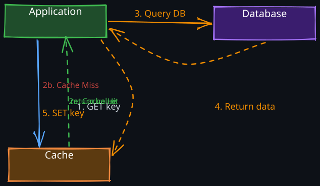
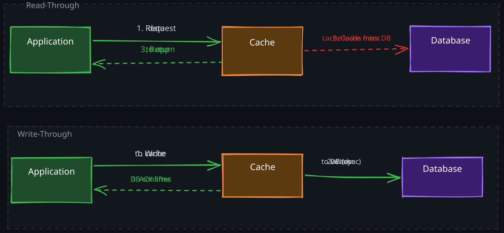
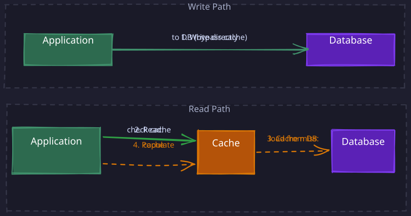
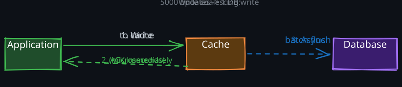
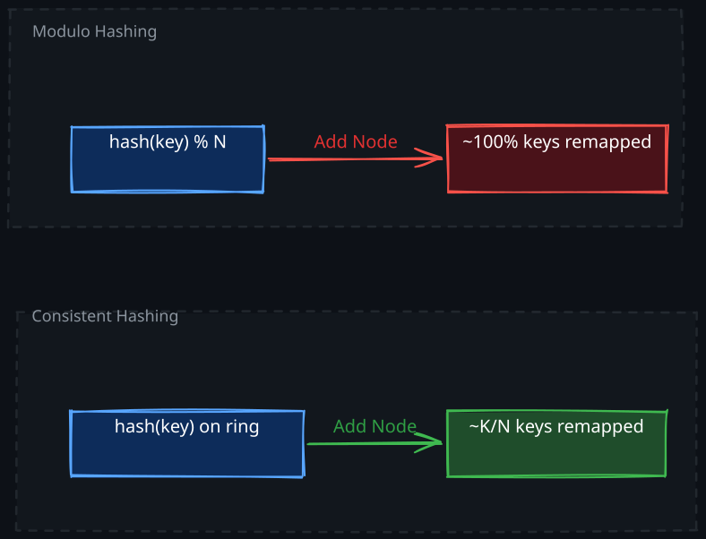
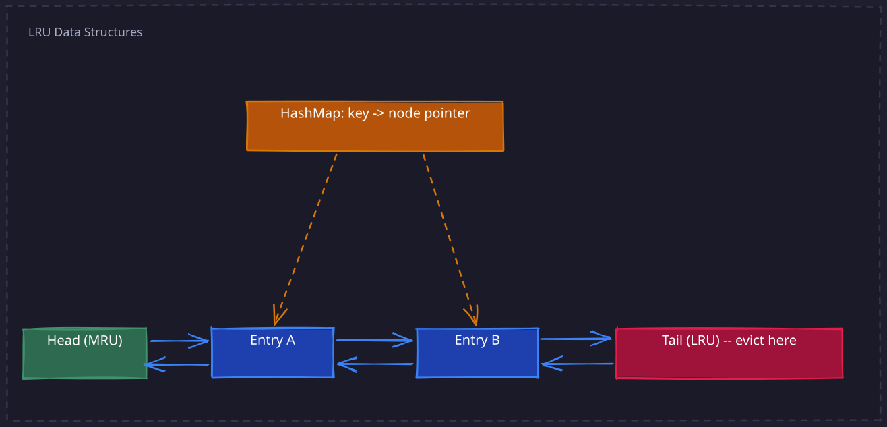

The Story
Facebook’s 2013 Memcached paper revealed a counterintuitive truth: at their scale, cache hits were the problem, not misses. A popular cache key — say, a viral post’s like count — might be read millions of times per second, hammering a single Memcached server into a hot-key bottleneck. Their solution was replicating hot keys across multiple cache servers, which means the cache layer developed its own replication strategy, independent of the database. You end up with replicated caches in front of replicated databases — the system you built to avoid database load develops the exact same problems as the database.
Every system design problem eventually hits the same bottleneck: the database is too slow for the access pattern. Disk I/O takes milliseconds. Network round-trips to a database add more. When a system serves thousands of reads per second for the same data, repeating that work every time is wasteful. Caching exists because of a fundamental asymmetry: reading from memory is 100-1000x faster than reading from disk or network, and most access patterns exhibit locality — a small fraction of data accounts for a disproportionate fraction of requests.
The deeper question is not whether to cache, but where the caching logic lives, when data moves between cache and storage, and what happens when they disagree.
Related Topics: Redis, Memcached, 02-Consistent-Hashing, 04-Distributed-Lock
1. Why Caching Works: Locality of Reference
Caching is effective because real workloads are not uniform. Three forms of locality explain why:
- Temporal locality — if a piece of data was accessed recently, it is likely to be accessed again soon. A user who views a product page will likely view it again within seconds (back button, refresh, related navigation). Keeping recently accessed data in memory eliminates repeated database queries.
- Spatial locality — if one piece of data is accessed, nearby data is likely needed soon. When a cache loads a user profile, the system will probably need that user’s settings, preferences, and session data shortly after. This is why cache warming and bulk-loading related keys work well.
- Frequency skew — a small number of keys account for a large share of traffic. On Twitter, a celebrity’s profile is read millions of times per day, but that data changes rarely. Caching those hot keys in memory means the database only needs to handle the long tail of infrequent reads.
The physical mechanism is straightforward: instead of performing an expensive operation (disk seek, network round-trip, query parsing and execution), the system returns a pre-computed result from RAM. Every cache hit saves that full cost. The tradeoff is memory (expensive, volatile, limited) versus compute and I/O (slow, but durable and unlimited).
2. Cache Access Patterns
The access pattern defines the contract between application, cache, and database. Each pattern makes different choices about who owns the caching logic, when data moves, and what consistency guarantees hold.
1. Cache Aside
Cache aside is the most widely used caching pattern, and understanding why it is the default requires understanding what it optimizes for: resilience and simplicity.

1. How It Works
- Application checks the cache for the requested key
- Cache hit: return the cached value directly
- Cache miss: query the database, return the result to the client, and populate the cache for future requests
data = cache.get(key)
if data is None:
data = database.query(key)
cache.set(key, data, ttl)
return data2. Why This Is the Default Pattern
The critical design insight is that the application owns the caching logic, not the cache itself. The cache is a passive store — it does not know about the database, does not trigger loads, and does not manage its own freshness. This has a profound consequence: if the cache fails entirely, the application continues to function. It falls back to querying the database directly, with degraded performance but no data loss and no outage.
Contrast this with write-through or read-through patterns where the cache sits in the critical path — if that cache layer goes down, the application cannot read or write data at all.
Cache aside also means only requested data is cached. The cache naturally fills with the working set — the data that is actually being read. There is no wasted memory on data nobody is requesting. This is demand-driven population, and it aligns cache contents with real access patterns without any configuration.
3. The Stale Data Problem
The fundamental tradeoff is consistency. When data is updated in the database, the cache still holds the old value. There are two mitigation strategies:
- TTL-based expiration — set a time-to-live on each cache entry. After the TTL expires, the next read triggers a fresh load from the database. This bounds staleness to the TTL window but means some reads return outdated data. Choosing the right TTL is an engineering judgment: too short and the cache hit rate drops; too long and users see stale data.
- Active invalidation — when a write occurs, explicitly delete the cache entry. The next read will miss and reload fresh data. This is more complex (the write path must know which cache keys to invalidate) but provides tighter consistency. Note: you should delete the cache key, not update it. Updating creates a race condition where a concurrent read could overwrite the cache with stale data from a slower database query.
4. When It Breaks Down
Cache aside struggles with write-heavy workloads because every write potentially invalidates a cache entry, and the next read must pay the miss penalty. It also suffers during cold-start scenarios — a new cache node has zero data and every request is a miss, which can overwhelm the database. Cache warming (pre-loading expected hot keys) mitigates this.
Real-world examples: Facebook’s TAO, Amazon product pages, Reddit post rendering
See Also: Redis for Caching
2. Read-Through and Write-Through
Read-through and write-through are often deployed together because they share the same design principle: the cache is the application’s only interface to the data layer. The application never talks to the database directly.

1. How They Work
Read-through: the application requests data from the cache. On a hit, the cache returns it. On a miss, the cache itself loads the data from the database, stores it, and returns it. The application does not contain database query logic for reads.
Write-through: the application writes data to the cache. The cache synchronously writes the same data to the database. Only after the database write succeeds does the cache acknowledge the write to the application.
2. The Consistency Guarantee
The key insight is that write-through provides strong consistency between cache and database because both are updated in the same synchronous path. There is no window where the cache holds a value that the database does not. Compare this to cache aside, where a write to the database and a delete from the cache are two separate operations — if the cache delete fails, the cache holds stale data indefinitely.
The mechanism is simple: the cache acts as a write buffer that always forwards to durable storage before acknowledging. This means the cache can never contain data that the database lacks. For systems where serving stale data is unacceptable (financial balances, inventory counts), this guarantee matters.
3. The Cost
The tradeoff is clear: write latency increases because every write must wait for the database round-trip. If the database takes 10ms for a write, every cache write takes at least 10ms, regardless of how fast the cache itself is. This makes write-through unsuitable for write-heavy workloads.
More critically, the cache becomes a single point of failure. In cache aside, a cache failure means degraded performance. In write-through, a cache failure means the application cannot write data at all, because the application only knows how to write to the cache. This is a fundamentally different failure mode and requires careful availability planning (replication, failover) for the cache layer.
Another subtle problem: write-through caches data on every write, even for keys that will never be read. This wastes cache memory on write-once data. Combining write-through with a TTL mitigates this by evicting unread entries.
Real-world examples: DynamoDB with DAX (DynamoDB Accelerator), CPU cache hierarchies
3. Write-Around
Write-around is a deliberate choice to keep the cache clean of write-heavy data that is unlikely to be read soon.

1. How It Works
- Writes go directly to the database, bypassing the cache entirely
- Reads follow the cache aside pattern — check cache, on miss load from database and populate
2. The Design Insight
Write-around recognizes that not all data written is data that will be read. In a logging system, an analytics pipeline, or an audit trail, data is written at high volume but read infrequently or only during investigation. Caching this data on write would pollute the cache with entries that are never read, evicting actually-hot data.
By separating the write path from the cache, write-around preserves the cache for the read working set. The tradeoff is that a read immediately after a write will always miss the cache and hit the database. For workloads where writes are frequent but reads of recent writes are rare, this is the right tradeoff.
Real-world examples: analytics data ingestion, event logging systems, audit trail storage
4. Write-Back (Write-Behind)
Write-back is the highest-performance write pattern, and the most dangerous. It exists because database writes are expensive, and many of them are redundant.

1. How It Works
- Application writes data to the cache
- Cache immediately acknowledges the write (write completes in microseconds)
- Cache asynchronously flushes dirty entries to the database in batches
2. Why Write Coalescing Works
The key insight that makes write-back powerful is write coalescing: if a key is updated multiple times during the buffer period, only the final value needs to be written to the database. Consider a social media like counter that receives 1,000 increments per second. With write-through, that is 1,000 database writes per second. With write-back, the cache accumulates all increments and writes the final count once per flush interval — perhaps every 5 seconds. That is a 5,000x reduction in database writes.
This works because the intermediate values do not matter. The database only needs the final state. Any workload where multiple updates to the same key occur within a short window benefits from coalescing: counters, session data, real-time analytics, gaming leaderboard scores.
3. The Data Loss Risk
Write-back introduces a fundamental durability problem. The cache holds data that the database does not yet have. If the cache process crashes, that in-memory buffer is lost. The severity depends on what the data represents:
- Lost like counts: annoying but recoverable
- Lost financial transactions: catastrophic
The window of potential data loss equals the flush interval. A 5-second flush interval means up to 5 seconds of writes can be lost. Mitigation strategies include:
- Persistent cache — Redis with AOF (Append-Only File) persistence writes every operation to disk before acknowledging. This survives process crashes but not disk failures, and adds write latency (partially defeating the purpose).
- Write-ahead log — before writing to the cache buffer, append the operation to a durable log (similar to a database WAL). On recovery, replay the log. This adds complexity but provides durability guarantees closer to synchronous writes.
- Replication — replicate the cache buffer to another node before acknowledging. If the primary crashes, the replica has the data. This requires at least two memory copies of the buffer, doubling the memory cost.
Each mitigation trades away some of write-back’s performance advantage. The engineering decision is where on the durability-performance spectrum the system should sit.
Real-world examples: InnoDB buffer pool, OS page cache, gaming session data, social media like/view counters
3. Cache Pattern Comparison
| Pattern | Write Speed | Read Speed | Consistency | Cache Failure Impact | Best For |
|---|---|---|---|---|---|
| Cache Aside | Fast (direct to DB) | Fast (after first miss) | Eventually consistent | Degraded performance | General purpose, read-heavy |
| Read/Write-Through | Slow (synchronous) | Fast | Strong | System failure | Consistency-critical systems |
| Write-Around | Fast (direct to DB) | Slow (on first read) | Eventually consistent | Degraded read performance | Write-heavy, read-rarely data |
| Write-Back | Very fast | Fast | Eventual | Data loss risk | High-throughput writes, counters |
4. Cache Distribution
When a single cache node cannot hold the working set or handle the request rate, data must be spread across multiple nodes. The distribution strategy determines how keys map to nodes, what happens when nodes are added or removed, and how the system handles node failures.
1. Why Consistent Hashing (and Why Not Modulo)
The naive approach to distributing keys across N cache nodes is modulo hashing: node = hash(key) % N. This works until the number of nodes changes. If you have 10 nodes and add an 11th, hash(key) % 10 and hash(key) % 11 produce different results for almost every key. This means nearly 100% of keys get remapped to different nodes, causing a massive spike of cache misses and database load.
02-Consistent-Hashing solves this by mapping both keys and nodes onto a hash ring. When a node is added, only the keys that fall between the new node and its predecessor on the ring need to move — roughly K/N keys (where K is total keys and N is total nodes). When a node is removed, only its keys redistribute to the next node on the ring. This minimizes data movement during scaling events.

Virtual nodes improve load balancing on the ring. A physical node is mapped to multiple positions (e.g., 150 virtual nodes per physical node), which smooths out the distribution. Without virtual nodes, the hash ring can have uneven segments, causing some nodes to hold significantly more keys than others.
2. Replication Strategies
Replication ensures data survives node failures. The two models make different tradeoffs:
- Leader-follower replication — one node is the leader for writes, followers replicate asynchronously and serve reads. This is simple, provides read scalability, and the follower can be promoted if the leader fails. The tradeoff is replication lag: followers may serve stale data, and failover requires coordination (detecting the failure, electing a new leader, redirecting clients). Redis Sentinel automates this for Redis.
- Multi-leader replication — multiple nodes accept writes and replicate to each other. This eliminates the single write bottleneck and enables geo-distributed writes (each datacenter has a local leader). The cost is conflict resolution: if two nodes accept a write to the same key simultaneously, the system must decide which write wins. Common strategies include last-writer-wins (simple but lossy) and vector clocks (correct but complex). 04-Cassandra uses this model.
For caches specifically, leader-follower is far more common because cache data is reconstructable from the database. Losing a write to the cache is not losing data — it just means a future cache miss. The simplicity of leader-follower outweighs the write scalability of multi-leader for most caching use cases.
See Also: Redis Replication
5. Cache Eviction Algorithms
When cache memory is full, the system must decide which existing entry to remove to make room for new data. The eviction policy directly affects hit rate, and therefore the effective performance of the entire caching layer.
1. LRU (Least Recently Used)
LRU is the default eviction policy for most caches because it directly exploits temporal locality: if data was accessed recently, it will likely be accessed again soon. Conversely, data that has not been accessed for a long time is unlikely to be needed.
1. The O(1) Implementation
A naive LRU implementation would scan all entries to find the least recently used one — O(n) per eviction. The standard O(1) implementation combines two data structures:
- Doubly-linked list — entries are ordered by access time. The most recently accessed entry is at the head, the least recently accessed at the tail. Eviction always removes the tail — O(1).
- Hash map — maps keys to their corresponding node in the linked list. On a cache access, the hash map provides O(1) lookup of the node, which is then moved to the head of the list (O(1) pointer manipulation).
Every operation — get, put, and evict — is O(1). The cost is memory: each entry requires two pointers (prev/next) for the linked list plus a hash map entry. For millions of cache entries, this overhead is significant.

2. Why Redis Uses Approximate LRU
Redis stores millions of keys. Maintaining a true LRU linked list for every key would add 16 bytes of pointer overhead per key (two 8-byte pointers). At 100 million keys, that is 1.6 GB of memory just for the eviction data structure — memory that could hold actual cached data instead.
Redis’s solution is approximate LRU via random sampling. Instead of maintaining a global ordering, Redis samples a small number of random keys (default: 5) and evicts the least recently used among the sample. This uses only 24 bits per key (to store the last access timestamp) instead of 16 bytes per key for linked list pointers. The approximation is surprisingly accurate — with a sample size of 10, Redis’s eviction behavior is nearly indistinguishable from true LRU in benchmarks.
The insight is that for eviction, you do not need to find the globally least recently used key. You only need to find a sufficiently old key to evict. Random sampling achieves this with dramatically lower memory overhead.
3. LRU’s Weakness: Scan Pollution
LRU is vulnerable to sequential scans. If a batch job reads every key in the database once (for a report, migration, or analytics query), those one-time-access keys push all the genuinely hot data out of the cache. After the scan completes, the cache is filled with data that will never be accessed again, and the hot data must be reloaded from the database.
LFU (Least Frequently Used) resists this because a single access does not give a key enough frequency count to displace established hot keys. Some systems (like Redis 4.0+) offer LFU as an alternative eviction policy for workloads with this access pattern.
2. LFU (Least Frequently Used)
LFU tracks how many times each key has been accessed and evicts the key with the lowest count. This protects frequently accessed keys from being evicted by a burst of new keys.
The problem with pure LFU is frequency stagnation: a key that was extremely popular an hour ago retains a high frequency count even if it is no longer being accessed. New hot keys cannot accumulate enough count to displace the stale popular key. Practical implementations address this with frequency decay — periodically halving all frequency counts so that historical popularity fades over time.
Redis’s LFU implementation uses a logarithmic frequency counter (8 bits, maxes out at 255) combined with a decay mechanism based on elapsed time since last access. This provides the scan resistance of LFU with the recency awareness of LRU.
3. Other Eviction Policies
- FIFO (First In First Out) — evicts the oldest entry regardless of access patterns. Simple to implement (a queue) with minimal overhead, but ignores access patterns entirely. Useful only when all entries have roughly equal probability of being accessed, or as a baseline to compare against.
- Random Replacement — selects a random entry to evict. Requires no tracking at all. Surprisingly effective for large caches where the working set is a small fraction of total entries — most random picks will hit a cold key. Used as a fallback when the overhead of LRU/LFU is not justified.
- MRU (Most Recently Used) — evicts the most recently accessed entry. Counterintuitive, but useful for sequential scan patterns where the most recently accessed item is the least likely to be accessed again (e.g., streaming through a large dataset page by page).
6. Cache Stampede (Thundering Herd)
Cache stampede is one of the most dangerous failure modes in a caching system. It occurs when a popular cache key expires (or is evicted), and many concurrent requests simultaneously discover the miss and all query the database for the same data. If the key is hot enough, this can overwhelm the database with thousands of identical queries in milliseconds.
1. Why It Happens
The root cause is a coordination gap: when a cache entry expires, there is no mechanism to ensure that only one request reloads it. Every request independently checks the cache, finds it empty, and independently queries the database. For a key that serves 10,000 requests per second, a cache miss triggers 10,000 database queries in the time it takes one query to complete and repopulate the cache. The critical detail is timing: all 10,000 requests discover the empty cache within the same millisecond, before any single request has had time to fetch from the database and repopulate. This is what makes it a thundering herd rather than a normal miss — the cache is empty concurrently for all requests. If requests were serialized, only the first would see the miss and the remaining 9,999 would hit the freshly populated cache.
This is especially dangerous when many popular keys share the same TTL (e.g., all set on a cache warm at the same time) and expire simultaneously.
2. Solution 1: Request Coalescing
Request coalescing ensures that only the first request to discover a cache miss actually queries the database. All subsequent requests for the same key wait for the first request to complete, then share the result. This requires a locking or promise mechanism:
- First request acquires a lock for the key (via 04-Distributed-Lock or in-process mutex)
- Subsequent requests detect the lock and wait
- First request loads data from database, populates cache, releases lock
- Waiting requests read from the now-populated cache
The tradeoff is added latency for the waiting requests (they block until the first request completes) and the complexity of distributed locking if the cache is distributed.
3. Solution 2: Probabilistic Early Expiration
Instead of all requests hitting the cache at exactly the TTL boundary, probabilistic early expiration causes some requests to refresh the cache before the TTL expires. The formula is:
should_refresh = (current_time - (expiry - ttl * beta * log(random()))) > expiry
Where beta is a tuning parameter (typically 1.0) and random() returns a uniform value between 0 and 1.
Why this works: log(random()) is always negative (since random() is between 0 and 1), so beta * log(random()) subtracts a random amount from the effective TTL. This means some small fraction of requests will “see” the key as expired before it actually expires and proactively refresh it. The closer the key is to actual expiration, the higher the probability that a request will trigger a refresh. This provides a smooth, probabilistic refresh rather than a sudden cliff where all requests miss simultaneously.
The mathematical elegance is that the refresh probability increases exponentially as the key approaches expiration, matching the urgency of refreshing before the stampede window.
4. Solution 3: Background Refresh
A separate background thread or process monitors keys approaching expiration and refreshes them proactively. The application never experiences a cache miss for hot keys because the background process ensures they are always fresh. The tradeoff is additional infrastructure complexity and the need to identify which keys are “hot enough” to warrant proactive refresh.
7. Multi-Level Caching
Production systems rarely use a single cache. Instead, they layer caches at different levels of the stack, each trading off different properties:
- L1 — Application memory (e.g., Guava cache, Caffeine, in-process HashMap). Access time: nanoseconds. Capacity: limited by application heap. No network round-trip. Each application instance has its own L1 — data is not shared across instances.
- L2 — Shared distributed cache (e.g., Redis, Memcached). Access time: sub-millisecond to low milliseconds (network hop). Capacity: tens to hundreds of GB across the cluster. Shared by all application instances.
- L3 — Database with its own internal buffer pool. Access time: milliseconds to tens of milliseconds. Durable. The authoritative source of truth.
The L1/L2 Consistency Challenge
The fundamental problem with multi-level caching is consistency between L1 and L2. When data is invalidated in L2 (or updated in the database), L1 caches across all application instances still hold the stale value. Since L1 is in-process memory, there is no centralized mechanism to reach into each application instance and invalidate the entry.
Common approaches:
- Short L1 TTLs - set L1 TTLs much shorter than L2 (e.g., L1 = 30 seconds, L2 = 5 minutes). This bounds L1 staleness but means L1 entries expire frequently, increasing L2 traffic.
- Pub/sub invalidation - when a key is invalidated in L2, publish an invalidation message (via Redis Pub/Sub, Kafka, etc.) that all application instances subscribe to. Each instance removes the key from its L1. This provides near-real-time consistency but adds infrastructure complexity and a dependency on the messaging system.
- Versioned keys - include a version number in the cache key (e.g.,
user:123:v5). When data changes, increment the version. Old keys are never read again and expire naturally. This avoids explicit invalidation but requires the application to know the current version, which itself may need to be cached.
The right choice depends on the staleness tolerance. For product catalog data, short TTLs are sufficient. For user session data or permissions, pub/sub invalidation may be necessary.
8. Cache Warming
Cache warming is the practice of pre-loading expected hot data into the cache before traffic arrives. This is critical in several scenarios:
- After deployment — a new application instance starts with an empty L1 cache. Without warming, the first wave of traffic produces 100% cache misses, potentially overwhelming the database.
- After cache flush — operational events (memory pressure, configuration changes, upgrades) can clear the cache. Reloading from the database under full production traffic is dangerous.
- Before anticipated traffic spikes — if a product launch or marketing event will drive traffic to specific pages, pre-loading those keys prevents a stampede.
The implementation is straightforward: identify the expected hot keys (from access logs, analytics, or domain knowledge) and issue read-through requests for each key before opening the system to traffic. For large key sets, this can be parallelized across multiple threads or processes. The risk is warming the wrong keys and wasting cache memory on data that will not actually be requested.
Revision Summary
- Cache aside is the default pattern because the application owns caching logic and survives cache failures gracefully. Only requested data is cached (demand-driven population). Delete, do not update, on write to avoid race conditions.
- Write-through provides strong consistency by updating cache and database in the same synchronous path, at the cost of write latency and making the cache a critical dependency.
- Write-back achieves highest write throughput through write coalescing (multiple updates collapse into one DB write) but risks data loss if the cache crashes before flushing.
- Consistent hashing minimizes key redistribution when nodes change (K/N keys move vs. nearly all keys with modulo). Virtual nodes smooth the distribution.
- LRU is the standard eviction policy. The O(1) implementation uses a doubly-linked list + hash map. Redis uses approximate LRU (random sampling) to avoid the 16-byte-per-key overhead of maintaining a true linked list.
- Cache stampede happens when a hot key expires and all concurrent requests hit the database. Mitigations: request coalescing (lock-based), probabilistic early expiration, background refresh.
- Multi-level caching (L1 in-process, L2 distributed) provides the fastest reads but introduces L1/L2 consistency challenges solved by short TTLs, pub/sub invalidation, or versioned keys.
- LFU resists scan pollution but needs frequency decay to avoid stale popular keys.
Deep Understanding Questions
-
In a cache aside pattern, why should you delete the cache key on write rather than update it? What specific race condition occurs if you update instead? Ans:
-
A write-back cache with a 5-second flush interval is serving 50,000 writes per second to 10,000 unique keys. How many database writes per second does the coalescing reduce this to? What happens if the cache crashes at second 4? Ans:
-
You have a distributed cache with 10 nodes using consistent hashing. You need to add 2 more nodes to handle increased load. How many keys move, and what happens to the hit rate during the rebalancing window? How would virtual nodes affect this? Ans:
-
Your Redis instance uses approximate LRU with a sample size of 5. A batch job scans through 10 million keys sequentially. How does this affect the cache compared to true LRU? Would switching to LFU help, and what new problem would LFU introduce? Ans:
-
Two popular cache keys have the same TTL and were set at the same time. They are about to expire simultaneously, each serving 5,000 requests per second. Explain exactly what happens at expiration time without any stampede protection, and how probabilistic early expiration changes the behavior. Ans:
-
In a multi-level cache setup (L1 in-process, L2 Redis), a user updates their profile. The write invalidates L2, but 20 application instances still have the old value in L1. A pub/sub invalidation message is published, but one instance misses the message due to a network partition. What does that user see, and how would you design around this? Ans:
-
You are designing a cache for a system where 0.1% of keys account for 80% of reads. What eviction policy would you choose and why? What happens if the popularity distribution shifts suddenly (e.g., a viral post)? Ans:
-
A write-through cache serves as the only interface to the database. The cache node fails, and the application fails over to a replica. During the failover window (200ms), 1,000 writes arrive. What happens to those writes? How does this compare to the failure behavior of cache aside? Ans:
-
You implement request coalescing for cache stampede protection using a distributed lock. The lock holder crashes after acquiring the lock but before populating the cache. What happens to the waiting requests? How would you design the lock to handle this? Ans:
-
Your L1 cache TTL is 30 seconds and L2 TTL is 5 minutes. A key is updated in the database, L2 is invalidated, but L1 still has 25 seconds remaining. During those 25 seconds, requests to this application instance return stale data. A product manager asks you to reduce L1 TTL to 1 second. What is the performance impact, and what alternative would you propose? Ans: